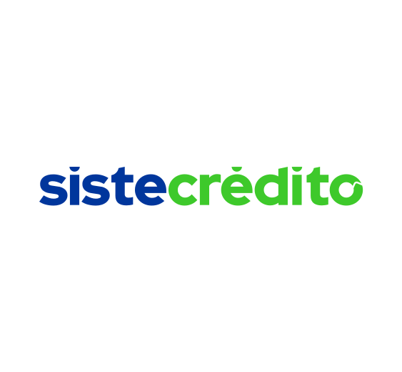

iQor
BPO
UX Design
Understanding business needs and their users is what leads to successful products.
I have over 6.5 years designing user-centered digital solutions for Fintech, Ecommerce, and BPO companies, both nationally and internationally, with the technical grounding to know what actually ships.
SELECTED WORKS



I'm David Santiago Morales, or as I'm known online, "DavinSane," a combination of my first names. I'm a visual designer from Fundación Universitaria Bellas Artes de Medellín, and for the past 7 years I've dedicated myself to designing digital products for companies nationally and internationally. I'm very passionate about designing digital products, sharing knowledge, and learning every day about new technologies and tools that let me speed up and optimize my workflow. On a personal note, I really love art, I'm very devoted to visual design and 3D design in Blender and ZBrush. In fact, I have a 3D printer that I use to print useful objects for my home and to sell. I also really love music, singing, and playing guitar. I do a lot of offroading and motocross. I love my pets: at home I have 2 beautiful dogs and 2 cats. I dedicate my life to everything I'm passionate about, and I do it with a lot of love and dedication.
I stand out for understanding and analyzing business needs and how their users work. Through interviews and usability testing, I identify opportunities, prioritize solutions, and design experiences that address real problems the business and its different digital products face. In how I work, I use different tools like Notion, Miro, Hotjar, Typeform, SurveyMonkey, Dovetail, Claude AI, and ChatGPT, which help me speed up my research work.


I bring AI into organizing findings, exploring hypotheses, and building prototypes faster. I evaluate its suggestions against what I learned in research, the product's context, and people's needs before turning them into design decisions. Some of the tools I use are: Codex, Claude, Claude Code, ChatGPT, V0, and Replit.


My specialty is building design systems that work across any platform and device. I build them either in Figma or tokenized as CSS styles so they can be used by any AI, which speeds up building complex products from day one. Some of the tools I use for this are: Figma, Claude, Claude Code, and Visual Studio Code.

Besides designing, I spend time developing other designers. I've spent 3 years mentoring interns and junior, mid-level, and senior visual and product designers, helping them build better judgment and grow in their professional and personal process; it's not just about getting the day's tasks done.
I focus on building the design team's processes through Design Ops: documentation, handoffs, ways of working with other teams, and design strategies that help the team and designers do their work better.